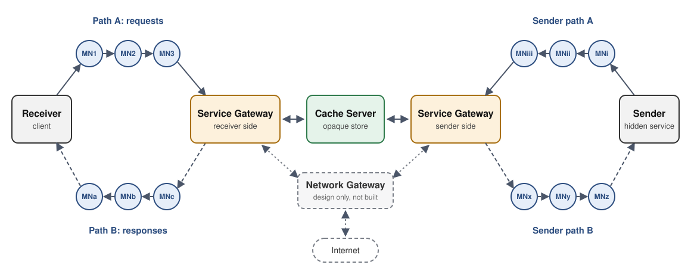

Anonymous communication with the duties split apart
ASN gives routing, brokering and storage to separate roles, so no single piece of infrastructure holds enough to link a receiver to the service it talks to. The repository has the prototype, a matched onion-routing baseline and the attack simulations used to test the idea.
Research code. ASN has no directory authorities, pins node keys trust-on-first-use and has only been run on a single host. It is for studying a design, not for protecting real traffic.
Four roles, nobody holds the whole picture
In onion routing the relays that carry a circuit are also the parties whose collusion breaks it. ASN hands each duty to a different operator. Every party reaches its gateway over two independently routed three-hop paths: one for requests, one for responses on a pre-built return header.

In the prototype both gateway roles run in one process on one host; the protocol keeps them separate so each could be run by a different operator.
Mix node
- Does
- Relays 1024-byte Sphinx packets one hop at a time, blinding the payload with AES-CTR.
- Sees
- The previous and next hop.
- Never sees
- Endpoints, payload, or the other path.
Gateway
- Does
- Terminates a party's two paths, binds them into one session and brokers its requests.
- Sees
- The request type and content key.
- Never sees
- The network address of the party behind the paths.
Cache
- Does
- Stores signed ciphertext and relays the content-key handshake. Only gateways can reach it.
- Sees
- Opaque blobs under lookup keys.
- Never sees
- Plaintext, or any party's address.
Receiver and Sender
- Does
- Agree a fresh content key per request; the Sender signs what it publishes.
- Sees
- Their own traffic.
- Never sees
- Each other's location.
What the evaluation found
Every number below comes from a seeded script or a live measurement in the repository. Where the design does not help, the results say so.
Linking a receiver to a service takes four compromised positions against three for a Tor onion service. All of that margin comes from role separation, and at f = 0.1 it is gone once operator correlation passes about 0.01.
One path's entry and exit already give routing-level linkage (f2). Against the plain build a passive correlator reaches TPR 0.998 to 1.000 at FPR 1e-3, the same as against the single-path baseline.
The hardened build (shared dispatch clock plus per-hop delay) brings a sequence correlator down from ceiling, at a measured throughput cost.
Terminating decoys at each hop and batch-mixing cuts detection by a GRU correlator at FPR 1e-3.
Load-adaptive cover leaks activity level once real load passes about 1.5 times the cover ceiling. Constant-rate cover stays at chance.
Commands and full results: ASN/eval2/README.md.
Cost against an onion-routing baseline
The repository includes a single-path, three-hop onion-routing implementation on the same crypto library and testbed, so the comparison isolates the protocol. Measured on the live binaries over loopback; absolute numbers depend on hardware.
| Metric | ASN | Tor-equivalent |
|---|---|---|
| Path construction, mean of 1,000 | 6.32 ms, 8 handshakes | 0.83 ms, 3 handshakes |
| Per-hop packet processing | about 5.0 µs, constant-cost AES-CTR blinding | AES-GCM decrypt and re-encrypt |
| Aggregate throughput, 1 to 200 sessions, 16 vCPU | 94.2 to 8,878.7 kbps | 82.2 to 11,713.4 kbps |
| Live GET with content handshake, n = 12 | 1.46 s mean; 3.15 s with 50 ms per-hop mixing | n/a |
| Sustained retrieval, 50 to 200 concurrent sessions | 7.66 to 7.78 GET/s, 100% completion | n/a |
Data files and machine specs: results/README.md.
Build variants
Each defence is a compile-time flag, so plain and hardened nodes can be compared on the same code.
| Target | Adds |
|---|---|
make nodes | Sphinx forwarding with bidirectional cover traffic at a per-client rate tier |
make hardened | Shared fixed-rate dispatch clock plus exponential per-hop mixing delay |
make poolmix | Batch mixing at each hop instead of per-packet delay |
make hopdecoy | Decoys terminated at each hop; combines with the two above |
make instrumented | Timing and bandwidth probes for benchmarks |
Quickstart
Needs GCC, Make, OpenSSL development headers and Python 3.8 or newer. Tested on Debian and Ubuntu.
Build and start the network
git clone https://github.com/hashtagRR/AnonSecNet.git
cd AnonSecNet/ASN && make nodes
cd ../tests/ASN && ./start_nodes_pool.sh # 100 pool mix nodes, gateway, cache
Publish as the Sender, and leave it running
cd AnonSecNet/ASN && ./sender.exe > PUT mykey hello
Fetch as the Receiver from a second terminal
cd AnonSecNet/ASN && ./client.exe
> GET mykey
Response (5 bytes, signature verified, confidentiality-protected): hello
Stop the network
tests/ASN/stop_nodes_pool.sh
Payload limits, persisted guard state and troubleshooting: ASN/README.md.
Known limitations
- Trust bootstrapping. Node identity keys are pinned trust-on-first-use against a synthetic consensus. There are no directory authorities.
- Sender paths are fixed. Receivers draw from a 100-node weighted pool with persistent guards; the Sender uses fixed nodes.
- Cache access control. The cache binds to loopback and has no application-layer authentication.
- Small payloads. At most 463 bytes of application data per packet, less after the content handshake.
- Single host. All results come from loopback testbeds; there is no wide-area evaluation.
To compare several anonymity designs side by side, see AnonTestLab, a general emulator for anonymity network experiments that grew out of this project.